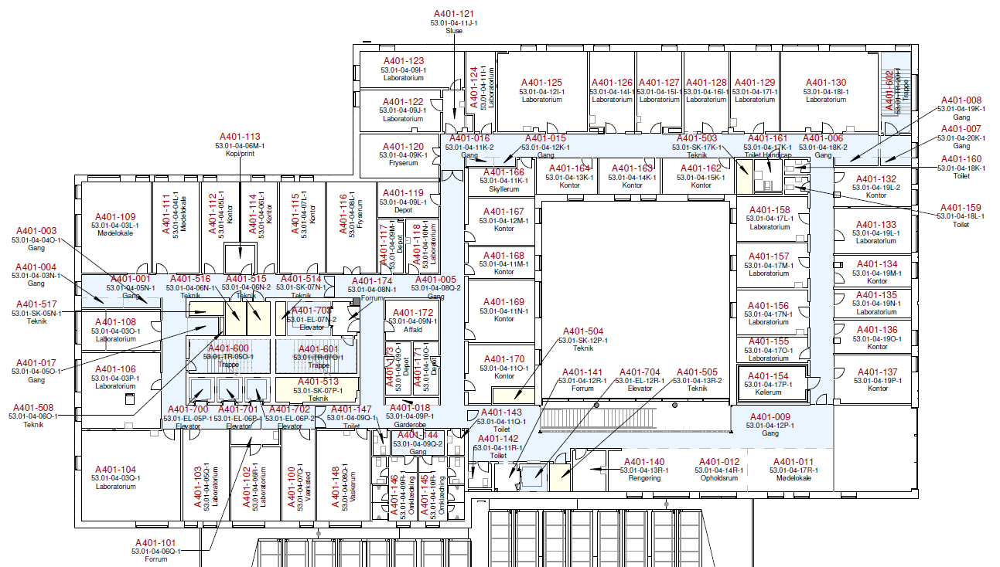

This document is specific to SDCA employees working on Level 4 in Forum. For more onboarding information please read through the SDCA Onboarding documents for all employees.
A warm welcome to you as a new employee at Steno Diabetes Center Aarhus. We are located in beautiful surroundings in Forum, Aarhus University Hospital (AUH).
On Level 4 there is laboratory research, as well as office facilities, meeting, and lunchrooms.
In this material you can find answers to a lot of questions regarding SDCA and especially Level 4.
Location overview

In the app “AUH Find vej” you can get help to finding your way around the entire hospital.
Access
Contact Inger Hornbech (inger.hornbech@rm.dk) who registers you in BSK and gives you access. The access card itself is picked up in the Photo Box (Krydspunkt J110, lokale J116-106), where you will also have your picture taken. To gain access to special locations (e.g. Cell culture) contact Inger Hornbech (inger.hornbech@rm.dk).
Allocation of office space
Contact Inger Hornbech (inger.hornbech@rm.dk) for allocation of office space.
Refrigeration and freezing space
If you are to be allocated freezer and refrigeration space, this must be agreed with Lenette Egelund Pedersen (lenette.pedersen@clin.au.dk), or Lene Trudsø (trudsoe@clin.au.dk).
The individual groups themselves ensure the distribution of racks in freezers.
Our 150 degree freezer quickly raise in temperature and must be closed quickly. Therefore, there must be control over where to find your things and it must be noted on the writing pad when you have opened the freezer (name, date, and time).
There is a large cold room (A401-154). In it, material is placed in plastic boxes and then put on shelves assigned to the research group to which one belongs. Contact Henriette Kristoffersen (henrikris@rm.dk) to order the necessary boxes.
Citrix RM-system
You log on to Citrix from AU’s computer, with your region ID and MitID or use a region computer with a region ID and access card.
If you need help getting started contact: Inger Hornbech (inger.hornbech@rm.dk) or Julie Knudsen (julie.knudsen@rm.dk). In case of technical problems contact: ServiceDesk Sundheds IT: 784 12345
Via Citrix you have access to all AUH systems:
- AUH intra with eg. News, Information from the canteen, Information from the Technical Department, Information about breakdowns, working environment, etc. It is also possible to search for departments and employees.
- RM mail
- Book meeting rooms via Pronester (read more here)
- Order Technical help via Dalux. See the guide (in Danish)
- Order consumables via RM indkøb
- Order chemical waste collection, see the Guide
- Search for missing packages, see the guide
- You may also benefit from the FAQ via the links below on the AUH intranet website (only accessible via Citrix login) here and here
If you cannot use the links directly, then copy it and paste it when you are logged in via Citrix and have opened Microsoft Edge.
AU Printer
Read about the AU printer under General practicalities
Office supplies/materials
Read about Office supplies and more under General practicalities
Delivery of mails and packages
At the lifts at A403 there is a trolley on which packages are placed on arrival at level 4. Letters are placed in holders on the wall – here you can both receive and send mail. Freezer and/or refrigerated packages are placed in FRYS 1 (room A401-116) in the freezer/refrigerator to the left of the door, respectively. The small sign on the outside of the door to FRYS 1 will show if there are packages on the freezer/fridge. When you have picked up your package and you are sure, there are no more, you must turn the sign again.
You have the responsibility to keep an eye on whether your package/letter have arrived. If you are missing a package you can search for it in RM indkøb via Citrix. Read the Guide to Track and Trace in RM indkøb (in Danish).
Delivery address for packages and letters:
A403-SDCA Forskning
Carl Krebs Vej 36
8200 Aarhus N
Att: YOUR NAME\
Remember that your name must be stated when ordering.
Address for Visitors:
Palle Juul Jensens Boulevard 11
Indgang A
8200 Aarhus N
Parking
Read about Parking at AUH here.
Pipe-mail (Rør-post)
There can be sent pipe-mail from:
- Plan 2 A201-028 (hallway)
- Plan 3 A301-040 (niche)
Canteen
Read about the canteens at AUH under General practicalities
“Fællesrummet” (Lunchroom)
In “Fællesrummet” there is a fridge for your lunch, a coffee machine, a water dispenser and fresh fruit.
There is a joint breakfast for all of SDCA every 1st Friday of the month.
Lockers for small bags
There are bag lockers in the niche A401-018. If you want to keep the key and use the locker over several days, add a label with your name to the door.
Uniforms/workwear
Uniforms and/or workwear, as well as towels, can be picked up at the Uniform Depot:
- C120-112
- G114-109
- J105-182
All uniforms at the hospital are, for hygiene reasons, only with short sleeves. It is not possible to get uniforms with long sleeves. Thin disposable uniforms with long sleeves or protective sleeves to pull up over the arms are available. However, these are not found at the Uniform Depots, but in the cell labs A401-122 and A401-123.
AUH has a uniform etiquette that you must follow. You can read about it here.
If you are wearing a lab coat over your private clothes, this must be removed before leaving Level 4. Washing: put your uniform in the blue clothes trolley, in room A401-144.
Changing rooms
SDCA has changing facilities on Level 4 room A401-145 (women) and, on Level 1 (entrance A7), rooms A101-107 (women) and A101-100 (men) with bathing facilities. Contact Julie Knudsen, (julie.knudsen@rm.dk) about lockers in the changing rooms.
Rooms for Chemical storage
We have two chemical rooms on level 4:
- A401-118
- A401-135
There is an LAF bench in both chemical rooms with a precise balance. In room A401-118 there is also a pH-meter and a magnetic stirrer.
BRIK Cabinets
There are BRIK Cabinets on level 4 in various laboratories and in the corridors. The items in the cabinets are for everybody to use. See the BRIK cabinet guide for location, instructions, and content. Inquiries regarding adding other materials in the BRIK Cabinets: contact Henriette Kristoffersen (henrikis@rm.dk). Other purchases are the responsibility of the individual groups themselves.
Waste management
In the offices there is a waste bin for paper, which is emptied by the service staff and a bin for residual waste, which you must empty yourself. You can place the residual waste in the waste bin in room A401-172.
- Cardboard boxes are folded and placed in the cage in room A401-172.
- Glass waste is placed in cardboard box with blue garbage bag in room A401-172.
- Used batteries are placed in a special container in room A401-172
- Plastic is collected for recycling by the following sorting:
- Hard plastic non-hazardous in room lab A401-104, A401-130 and in cell lab A401-122+A401-123
- Hard plastic non-hazardous, is plastic that has not been in contact with hazardous chemicals or is infectious. For example, bottles for media, PBS, sterile water, pipette boxes, etc. However, bottles must be rinsed before being placed in the waste container and the lid and bottle keep apart. - Hard plastic hazardous in room A401-172.
- Hard plastic hazardous is hard plastic that has been in contact with hazardous chemistry, however, here there are exceptions. On the waste bin you can be seen which ones are allowed to be put in the waste container. Be aware before putting anything in the container.
- Soft plastic non-hazardous in Lab 401-106, Lab A401-130, as well as room A401-172.
- Soft plastic is plastic such as bubble wrap, plastic bags, etc.
See also guide for Waste Management.
Chemical waste
A trolley table for chemical waste is located in Room A401-172. Pick up MUST be booked before placing the chemical waste. Instructions are available on the trolley (in Danish). Pay attention to waste groups!! Remember to write what is in the chemical waste container, as well as approximately the amount and waste group.
Ordering dry ice
Order via the Purchasing Department (Indkøbsafdelingen), AUH – use the dry ice order form (in Danish).
Wet-Ice
You can pick up wet-ice in room A401-128
Autoclave
There is a small wet autoclave and two dry autoclaves in room A401-166 One dry autoclave is reserved for cell culture bottles etc. and will be started approximately every other day. The second dry autoclave can be used for both sterilization and for “burning” glassware for RNA/DNA work.
Safety and fire
There is a first aid kit in a locker in “Fællesrummet”.
Spill kits for chemical accidents are available in the two Chemical Rooms (A401-118 and A401- 135).
Fire hose can be found in “Fællesrummet”.
In case of fire, the stairwells act as escape routes, the fire should be kept out of there for min. 2 hours. All doors are fire-doors and they close automatically upon fire. All locked doors open so you can get in and out without access cards. Be aware that ventilation checks of fire dampers are ongoing from 6.00-6.30 every Thursday, which means that fume hood / LAF benches do not work during that period. Therefore, pay attention to what is put in fume Hoods from Wednesday to Thursday.
Workflow in laboratories
Please note that there may be different rules in the different laboratories on level 4 and you must have a thorough instruction before starting work. Instructions must be given on:
- Waste management
- Chemical waste
- Glove use
- Washing utensils
- Safety
- Fume Hoods
Use of laboratory equipment
When using/borrowing other people’s equipment, permission must always be asked and there must be thorough instruction in the use, regardless of what is to be borrowed. The equipment will be marked with a color system and name of an equipment responsible.
- Green = Use without asking (e.g. Wet-ice)
- Yellow = Ask responsible person about the possibility of borrowing the equipment. (e.g. EVOS)
- Red = This equipment is not available for use
The individual research groups, at level 4, decide for themselves what colour their own equipment should be.
Cell Culture Lab
We have 3 Cell Culture Rooms, that are GMO Class I, two at level 4 – room A401-122 and A401-123 and 1 Cell Culture room at J J101-120.
You must be instructed in workflow and GMO rules before you can work in the cell labs.
Read the GMO safety rules and general rules for cell labs.
If you wish to work in a cell lab, please contact: Lotte Holmbo Arentoft (lotte.arentoft@clin.au.dk)